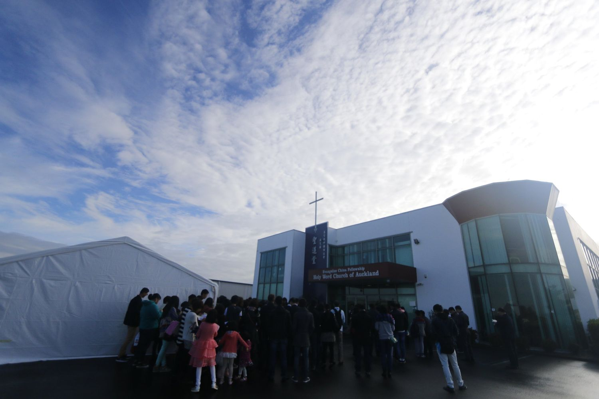

Theme of the Year Demo content
Together in love, Living out Christ
愛裏同行，活現基督
ECF Holy Word Church of Auckland
our church
is here to fulfil the mission of the Lord on earth, to preach the Gospel to the ends of the earth, to build up the disciples in the truth, to serve as the salt and light of the world, to manifest the love, holiness and righteousness of God.
